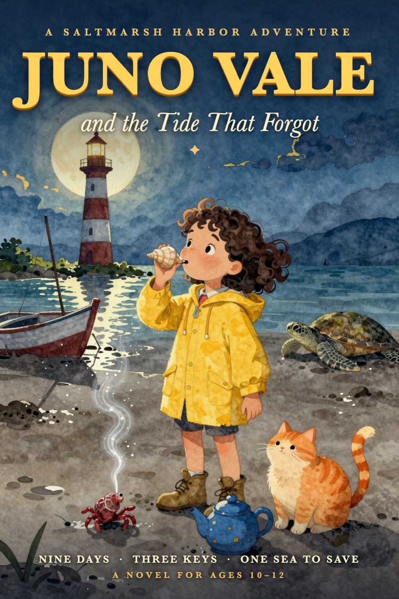
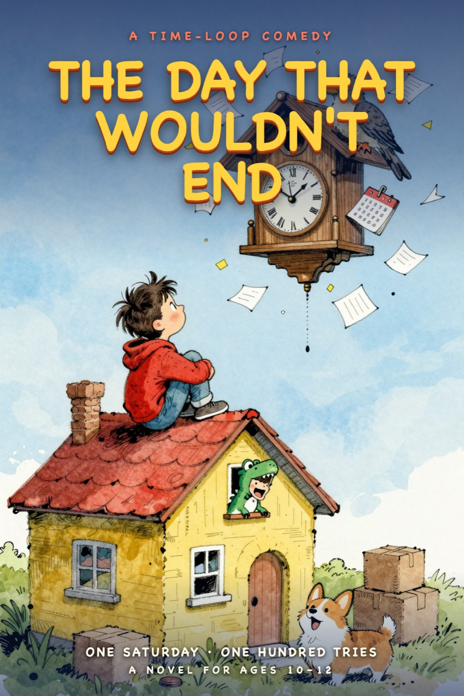
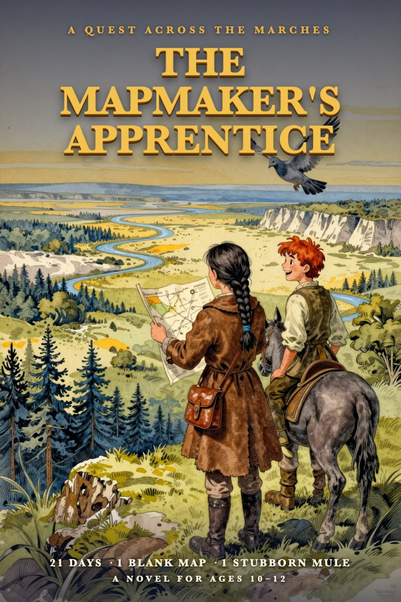
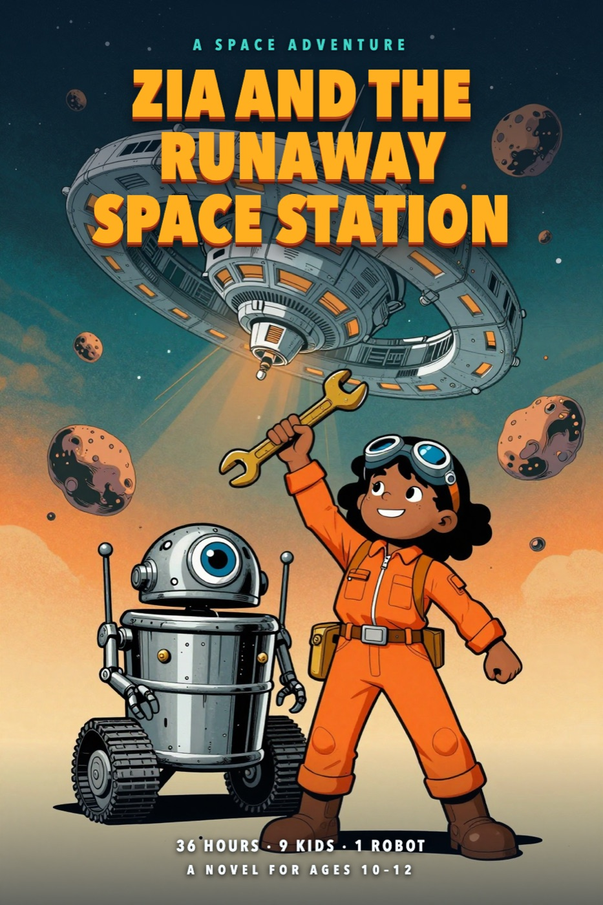

Juno Vale and the Tide That Forgot
A Saltmarsh Harbor Adventure
The tide has been gone for eleven months, and only one girl is listening. With a shell whistle, a grumpy hermit crab and a very nervous best friend, Juno has nine days to find three lost keys and wake a sleeping lighthouse.
Read the book →
The Day That Wouldn't End
A Funny, Wonderful Time-Loop Novel
It's Max Bello's last day in the only town he's ever known, and he has decided to make it the worst day of his life. Then he wishes it would never end. Now it won't. One hundred Saturdays, one T. rex costume, and one very bossy cuckoo clock later, Max has to figure out the one thing the loop was really asking.
Read the book →
The Mapmaker's Apprentice
A Quest Across the Uncharted Marches
Tam Marrow grew up sorting fish on the Lowtide Docks and only learned to read at nine. Now she is apprentice to the finest old mapmaker in the kingdom, and she has just been entered in the Grand Survey against the best-trained apprentices in the land. Her lines are crooked. Her ink blots. But Master Finch has one rule: be a little better than yesterday. Twenty-one days, one stubborn mule, and one true map to draw.
Read the book →
Zia and the Runaway Space Station
A Space Adventure
When the adults leave on a routine supply run, Halcyon Station's computer goes haywire and starts flying 400 homes straight at a field of space rock. The only ones aboard are nine kids, one concussed counselor and a very dramatic robot. Zia Okonkwo can fix anything, as long as nobody helps her. She has 36 hours to learn that the hardest repair is asking.
Read the book →